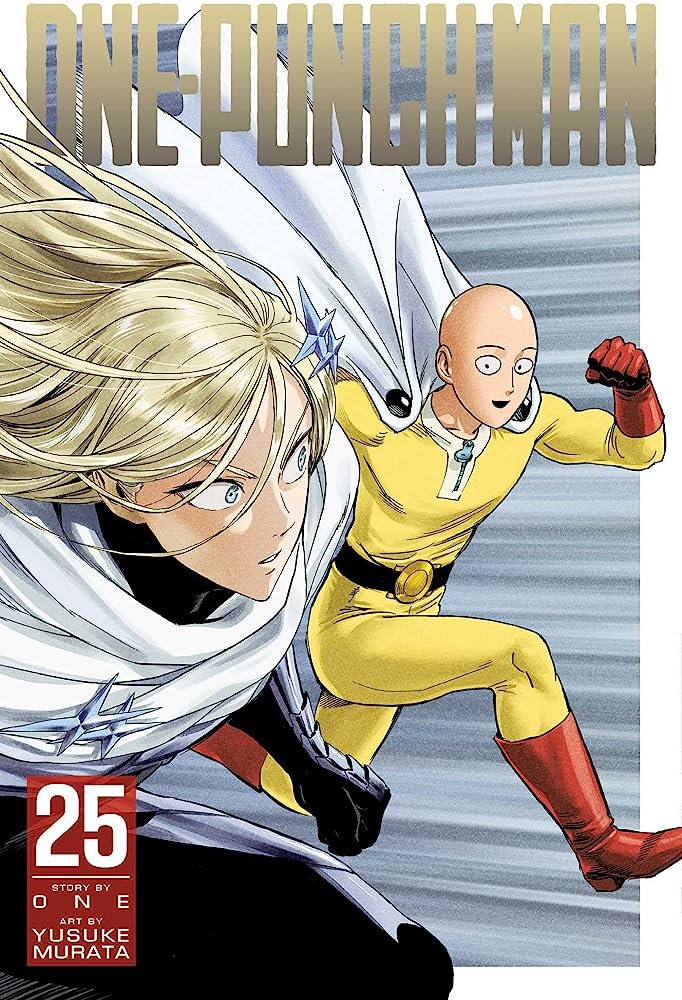

Chainsaw Man
Quando seu pai morreu, Denji ficou preso com uma dívida que era incapaz de pagar. Mas graças à ajuda de um cachorro demônio que ele salvou chamado Pochita, Denji é capaz de sobreviver como caçador de demônios de aluguel. Os poderes de serra elétrica do Pochita são bem poderosos contra estes demônios. E então, quando o Denji acaba sendo morto por um demônio, o Pochita desiste de sua vida para revivê-lo. Mas, agora o Denji renasceu como um hibrido de demônio com humano... Agora ele é o "Chainsaw Man"!!!

Demon Slayer
O mangá conta a história de Tanjiro, o filho mais velho de uma família que é massacrada por um demônio e, a única sobrevivente do incidente foi umas das suas irmãs, que por causa do massacre acaba se transformando em um demônio. Então, o protagonista, Tanjiro, sai em uma jornada para tentar achar uma ''cura'' para a sua irmã...

Solo Leveling
Em um mundo onde caçadores – humanos que possuem habilidades mágicas – devem lutar contra monstros mortais para proteger a raça humana de certa aniquilação, um caçador notoriamente fraco chamado Sung Jinwoo se encontra em uma luta aparentemente interminável pela sobrevivência.

One Punch Man
conta a história de Saitama, um super-herói extremamente poderoso, que se entediou com a ausência dos desafios nas suas lutas contra o mal e procura encontrar um oponente digno.